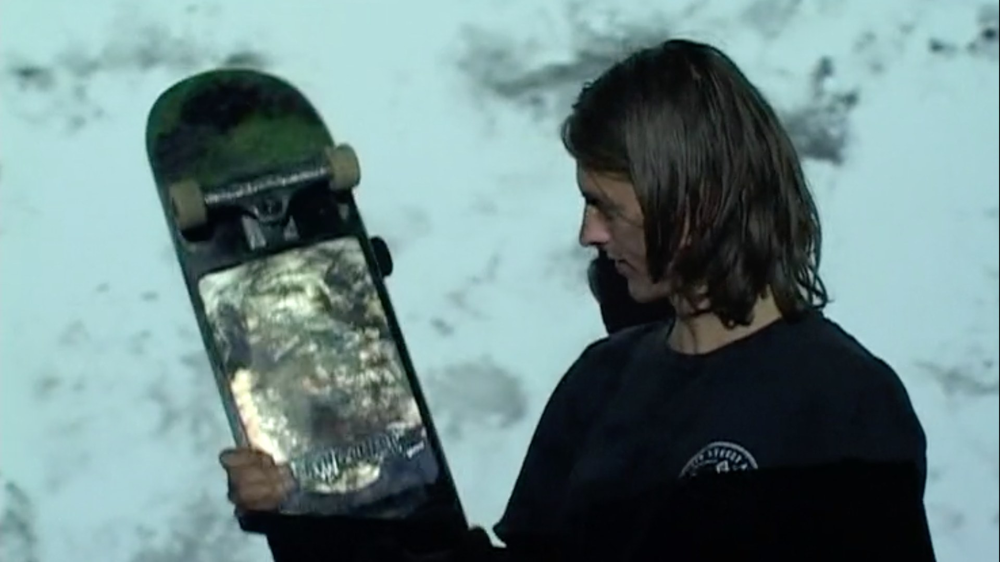
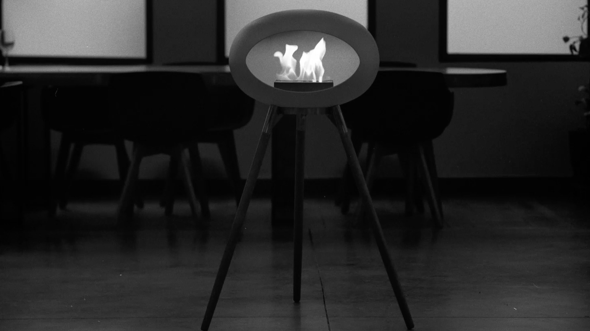
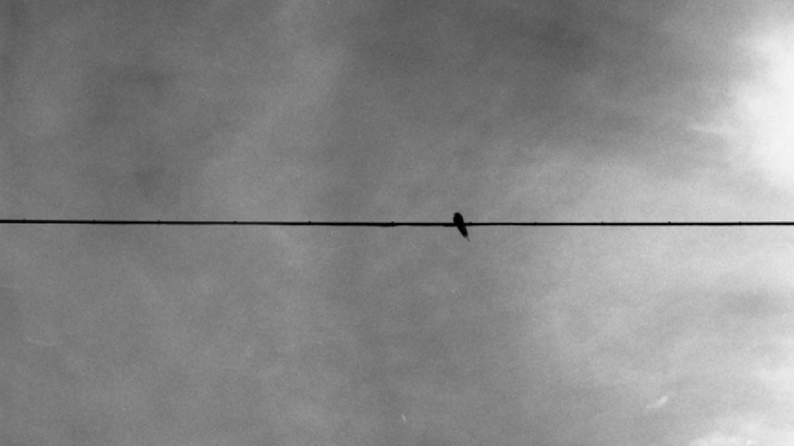
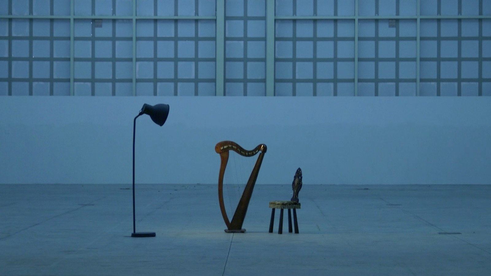

VerSkateboard Diaries
Un skater vaga por Barcelona buscándose a sí mismo. Grabada en videocámara, la pieza recorre calles, plazas y rincones vacíos, y convierte la ciudad en diario y en espejo a la vez.
Ver en VimeoVideorretratos, piezas experimentales y documentales

VerUn skater vaga por Barcelona buscándose a sí mismo. Grabada en videocámara, la pieza recorre calles, plazas y rincones vacíos, y convierte la ciudad en diario y en espejo a la vez.
Ver en Vimeo
VerChimeneas escandinavas minimalistas en Barcelona. Una pieza de marca para LeFeu que combina vídeo digital con fotografías de medio formato en película 120.
Ver en Vimeo
VerDon Adolfo, el maestro del pueblo, fue asesinado en Sahelices del Río, en Castilla y León, durante la Guerra Civil. Testimonios y una investigación que descubren un pueblo con mucho que contar.

Fotograma / clip